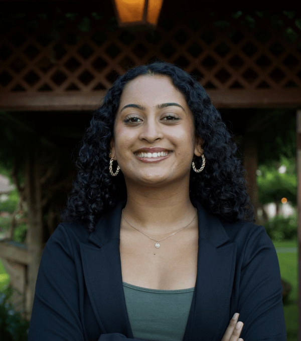
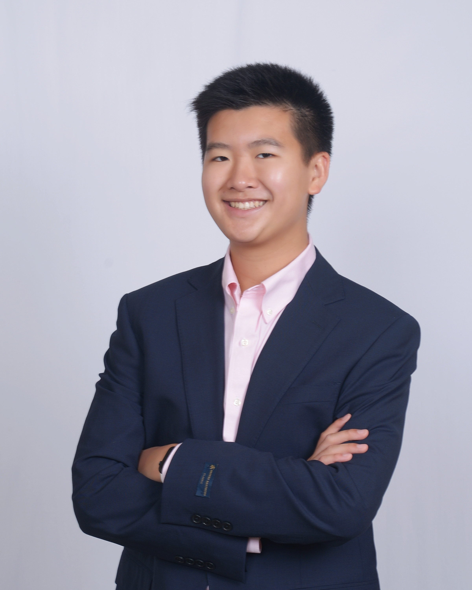

Started by two researchers and advocates, screenshottED is a project to empower young people to understand the research on screen use and advocate for better policies on screens in their community

Sahana is a senior at UCSC and a Research Assistant at the Nagata Lab where she studies screen use and eating disorders. She's is a member of the Eating Disorder Coalition’s Young Leaders Council, where she advocates for healthy social media use and passage of eating disorder legislation to Congress. She is also a member of the Steve Fund’s Youth Ambassador Board, where she advocates for implementation of culturally sensitive mental health resources in colleges for youth of color. Sahana also volunteers for a local eating disorders nonprofit, the Eating Disorders Resource Center, where she founded the Student Action Committee and Education Initiative

Oliver is a sophomore at Duke University and a Research Assistant at the Nagata Lab. He was a program intern for #HalfTheStory, where he developed their Digital Civics Academy. As a program intern, he mobilized and trained 50 young people to advocate and push for safer online spaces. Outside of #HalfTheStory, he is the Vice Chair of the SPRING Group. As Vice Chair, he led digital wellness projects with various organizations including Boston Children’s Digital Wellness Lab, UK Minister of Science, and the UNHCR